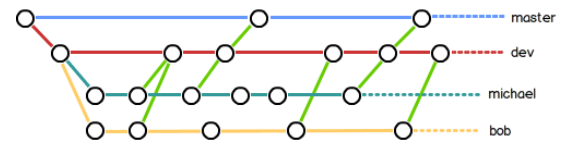

安装 mkdir 创建文件夹(cd 进入文件夹) cat xx.txt查看此文件 ※※※git init 配置.git文件夹 git log查看你所有的commit记录和你写的说明 git status查看你当前版本的状态 红色无说明: 新建没add new file :add 没commit 红色modified: 修改没 add 绿色modified: 修改add没commit both modified: 分支冲突 git diff如果有修改显示少啥多啥了 新建文件后 git add 文件全名 git commit -m "注释" add加入暂存区 commit是将暂存区提交到工作区 修改文件后 同上 git log 查看commit日志(按q退出) 简外观git log --pretty=online git reset --hard HEAD^退一个版本,git reset --hard HEAD~100退100个版本 git reset --hard 3628164,还原到3628*****版本 ※git reflog显示你输入的所有命令,以及操作ID以便找到你要退回的版本 git checkout -- 文件全名:1.没来得及add时候2.add后com之前又修改了,撤销修改! git reset HEAD 文件名: 当你add后退回到没add的阶段 删除处理: 1.确认删除 git rm 文件名 2.误删处理 git checkout -- 文件名 创建SSH key: ssh-keygen -t rsa -C "youremail@example.com" 本地库关联远程库: git remote add 远程库命名 git@github.com:github账号/本地库名.git push到远程库 git push origin master git push 远程库名 (origin) master (-u) git push 远程库名 dev:将dev分支推送到远端 git clone git@github.com:github用户名(不是账号)/远程库名.git git branch dev 创建分支 ※git checkout dev 切换分支 ※※※git checkout -b dev <=>上两条命令 git branch查看分支 及当前分支 git merge dev合并分支(dev于当前合并) git branch -d dev删除分支 git branch -D dev强制删除分支 ※?分支冲突时 在往前推进一下master,添加提交即可 ※合并分支之前要切回主分支master git log --graph --pretty=oneline --abbrev-commit 分支合并情况&合并图 git merge --no-ff -m "merge with no-ff" dev 禁用Fast forward快进  git stash工作现场存储 git stash list查看存储工作现场 回复当前分支上的工作现场: 一是用git stash apply恢复，但是恢复后，stash内容并不删除，你需要用git stash drop来删除； 另一种方式是用git stash pop，恢复的同时把stash内容也删了： git remote (-v)查看远程库信息(详细信息) 多人协作时，所有人克隆到都只是项目文件夹，所有人的git都是从此目录打开 git checkout -b dev origin/dev小伙伴克隆你的分支 git pull origin(库名？) master(分支名) 从远端更新代码！！ Everything up-to-date是没有可用更新，不是提交更新了 git pull若出现多人协作bug则在本机add com那个小伙伴的修改然后在pull push git tag(v1.0)在当前分支当前最新commit上创建标签 git tag 查看所有标签 git tag <(某次提交的版本号)>为特定提交创建标签 git tag -a -m "文字说明" <(某次提交号)>带说明创建 git show 查看说明文字 git tag -s ......................................采用RGP签名(暂不好使，待研究) git tag -d 删除标签 git push origin 向远端推送某标签 git push origin --tags一次性推送全部标签 在远端删除某标签 1.先在本地删除：git tag -d 2.在推送到远端，命令不同：git push origin :refs/tags/